from lokigi.site import SiteProblem
problem_public_transport_extended = SiteProblem()
problem_public_transport_extended.add_demand(
"../../../sample_data/demand_MF_50_84.csv", demand_col="M50-84",
location_id_col="LSOA 2021 Name",
)
problem_public_transport_extended.add_sites(
"../../../sample_data/devon_mius.geojson",
candidate_id_col="Facility_Name"
)
problem_public_transport_extended.add_region_geometry_layer(
"https://github.com/hsma-programme/h6_3c_interactive_plots_travel/raw/main/h6_3c_interactive_plots_travel/example_code/LSOA_2011_Boundaries_Super_Generalised_Clipped_BSC_EW_V4.geojson",
common_col="LSOA11NM"
)
problem_public_transport_extended.add_travel_matrix(
travel_matrix_df="../../../sample_data/devon_miu_travel_matrix_public_transport_extended.csv",
source_col="from_id",
unit="minutes",
)
problem_public_transport_extended.add_equity_data(
"../../../sample_data/devon_imd_2025_2021_LSOAs.csv",
equity_col="Index of Multiple Deprivation (IMD) Decile (where 1 is most deprived 10% of LSOA",
common_col="LSOA name (2021)",
label="IMD decile",
disadvantaged_end="low",
)Site Closure Problems
Often we may find ourselves with a set of sites where we are required to close one or more of them due to budget or other constraints, but wish to do this in a way that will minimize the impact on users.
This is an easy thing to do with lokigi.
To start with, we will set up our problem as usual.
For our site file, we simply load in a file containing the positions of all of our existing sites, and provide a travel matrix of travel times from each region to those sites.
Here, we’ve also provided a region geometry layer to support plotting.
We also register IMD (Index of Multiple Deprivation) decile via add_equity_data(), with disadvantaged_end="low" since decile 1 is the most deprived 10% of LSOAs – the same source used in population impact vs baseline. This isn’t used to change which sites are chosen; it unlocks the equity-band breakdown of the closure’s impact later in this example.
Note
Note that we are using a matrix of public transport travel times here. This particular matrix only looks at bus travel, not rail.
Let’s quickly remind ourselves of the sites in this case.
problem_public_transport_extended.show_sites()| canonical_site_index | Facility_Name | Latitude | Longitude | geometry | |
|---|---|---|---|---|---|
| 0 | 0 | North Devon District Hospital | 51.09217 | -4.05043 | POINT (256506.101 134540.134) |
| 1 | 1 | Honiton Hospital | 50.79492 | -3.18659 | POINT (316466.043 100155.33) |
| 2 | 2 | Tiverton & District Hospital | 50.90933 | -3.49308 | POINT (295122.857 113268.884) |
| 3 | 3 | Exmouth Minor Injury Unit | 50.62083 | -3.40198 | POINT (300919.29 81063.23) |
| 4 | 4 | Victoria Hospital (Sidmouth) | 50.68161 | -3.23966 | POINT (312514.661 87617.001) |
| 5 | 5 | Newton Abbot Community Hospital | 50.53926 | -3.61224 | POINT (285848.833 72295.946) |
| 6 | 6 | Totnes Community Hospital | 50.43283 | -3.68406 | POINT (280491.309 60575.271) |
| 7 | 7 | NHS Walk in Centre (Exeter) | 50.72658 | -3.52521 | POINT (292444.533 92994.08) |
| 8 | 8 | Tavistock Hospital | 50.54708 | -4.15376 | POINT (247503.629 74139.474) |
| 9 | 9 | South Hams Hospital (Kingsbridge) | 50.28929 | -3.78143 | POINT (273194.03 44777.085) |
| 10 | 10 | Cumberland Centre (Plymouth) | 50.37004 | -4.16873 | POINT (245868.211 54486.789) |
| 11 | 11 | Derriford Hospital (UTC) | 50.41802 | -4.11890 | POINT (249563.619 59719.094) |
| 12 | 12 | Ilfracombe & District Tyrrell Hospital | 51.20468 | -4.12454 | POINT (251678.187 147197.738) |
| 13 | 13 | South Molton Hospital | 51.01681 | -3.83823 | POINT (271156.007 125767.813) |
| 14 | 14 | Dawlish Community Hospital | 50.58057 | -3.47482 | POINT (295677.679 76686.654) |
problem_public_transport_extended.plot_sites()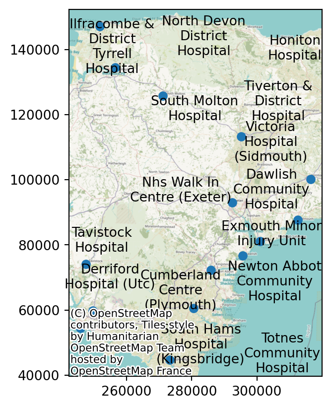
First, let’s create a baseline evaluation of the existing setup of all 15 sites.
baseline = problem_public_transport_extended.evaluate_baseline(
site_names=problem_public_transport_extended.show_sites()["Facility_Name"].tolist(),
threshold_for_coverage=60, # OPTIONAL
)baseline.show_solutions()| site_names | site_indices | unselected_site_names | coverage_threshold | weighted_average | unweighted_average | 90th_percentile | max | weighted_average_for_ranking | unweighted_average_for_ranking | ... | gap_absolute_weighted | gap_relative_weighted | avg_lower_third_bins | avg_middle_third_bins | avg_upper_third_bins | inter_tertile_ratio | gap_absolute_description | gap_relative_description | inter_tertile_description | problem_df | |
|---|---|---|---|---|---|---|---|---|---|---|---|---|---|---|---|---|---|---|---|---|---|
| 0 | [North Devon District Hospital, Honiton Hospit... | [0, 1, 2, 3, 4, 5, 6, 7, 8, 9, 10, 11, 12, 13,... | [] | 60 | 61.17 | 56.34 | 97.0 | 262.0 | 61.17 | 56.34 | ... | 45.04 | 2.16 | 57.6 | 63.18 | 46.81 | 1.23 | Spread of 45.0 minutes between best and worst ... | Significant Disparity (Worst group travels 116... | Slightly Inequitable (Most deprived travel 23%... | LSOA 2021 Name North Devon District Hos... |
1 rows × 36 columns
Our baseline has all of the standard methods available that we are used to in our solution objects.
plot_best_combination() can be used to visualise the travel times with the current site configuration.
fig = baseline.plot_best_combination(
unchosen_site_colour="magenta",
plot_site_allocation=False,
legend_loc="lower right",
show_all_locations=False,
)
fig;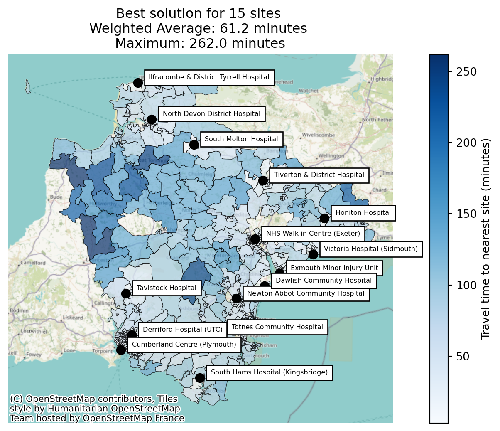
And we can also use the plot_site_allocation parameter to see which sites are currently the closest sites for a range of people.
fig = baseline.plot_best_combination(
unchosen_site_colour="magenta",
plot_site_allocation=True,
legend_loc="lower right",
show_all_locations=False,
cmap="Set3",
)
fig;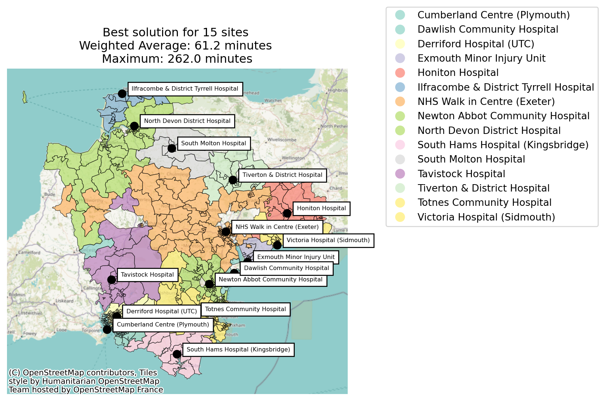
Let’s imagine that we’ve been told we need to choose two to close of the fifteen existing sites.
We will simply pass in a p that is lower than the number of existing sites.
Note
We’re going to use a ‘greedy’ search strategy here. This looks for the best option at each step - so it’s a bit short-sighted.
We could brute force it instead, which we’ll do later in this notebook!
sites_to_close = 2
n_existing_sites = len(problem_public_transport_extended.show_sites())
n_sites_remaining = n_existing_sites - sites_to_close
solution_greedy_public_transport_extended = problem_public_transport_extended.solve(
p=n_sites_remaining,
search_strategy="greedy",
threshold_for_coverage=60,
baseline=baseline # Optional - but adds extra useful metrics over not including
)Best combination for 1 sites: [7]
Best combination for 2 sites: [7, 11]
Best combination for 3 sites: [0, 7, 11]
Best combination for 4 sites: [0, 6, 7, 11]
Best combination for 5 sites: [0, 1, 6, 7, 11]
Best combination for 6 sites: [0, 1, 5, 6, 7, 11]
Best combination for 7 sites: [0, 1, 3, 5, 6, 7, 11]
Best combination for 8 sites: [0, 1, 3, 5, 6, 7, 8, 11]
Best combination for 9 sites: [0, 1, 3, 5, 6, 7, 8, 10, 11]
Best combination for 10 sites: [0, 1, 3, 4, 5, 6, 7, 8, 10, 11]
Best combination for 11 sites: [0, 1, 3, 4, 5, 6, 7, 8, 9, 10, 11]
Best combination for 12 sites: [0, 1, 2, 3, 4, 5, 6, 7, 8, 9, 10, 11]
Best combination for 13 sites: [0, 1, 2, 3, 4, 5, 6, 7, 8, 9, 10, 11, 14]Let’s plot what the greedy solver found to be the best solution for 13 sites.
fig = solution_greedy_public_transport_extended.plot_best_combination(
unchosen_site_colour="magenta",
plot_site_allocation=False,
legend_loc="lower right",
show_all_locations=True,
label_all_locations=True
)
fig;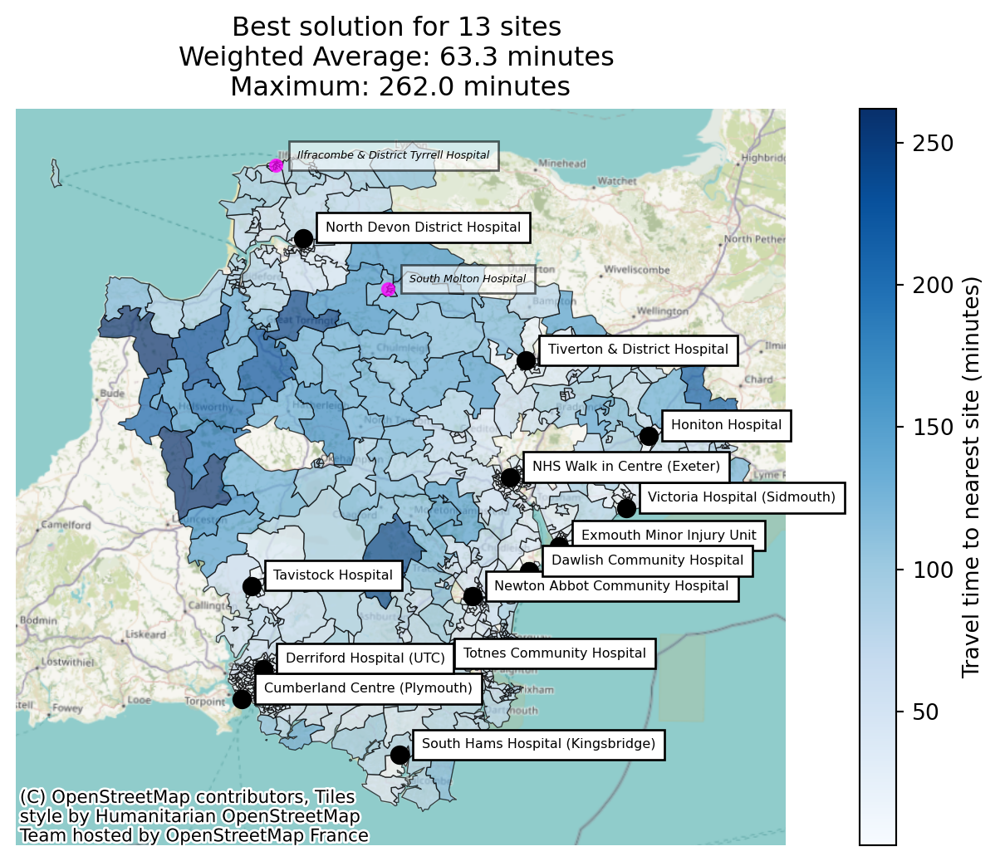
And take a look at where each region was allocated to (in terms of what each region’s closest site was).
fig = solution_greedy_public_transport_extended.plot_best_combination(
unchosen_site_colour="magenta",
plot_site_allocation=True,
legend_loc="lower right",
show_all_locations=True,
label_all_locations=True,
cmap="Set3",
)
fig;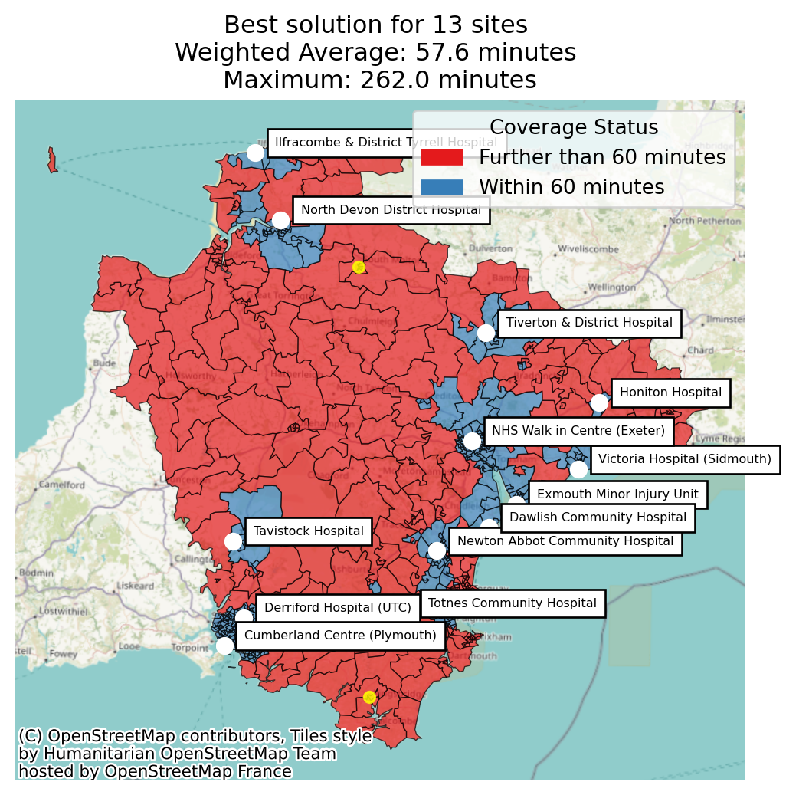
We can take a look at the full solution dataframe.
Note
Because we’re using greedy, we will only get a single solution.
solution_greedy_public_transport_extended.show_solutions()| solution_rank | site_names | site_indices | unselected_site_names | coverage_threshold | weighted_average | unweighted_average | 90th_percentile | max | weighted_average_for_ranking | ... | regions_worsened | regions_unchanged | mean_reduction_among_improved | mean_increase_among_worsened | max_reduction | max_increase | demand_improved_by_equity_group | demand_worsened_by_equity_group | sites_closed_vs_baseline | sites_added_vs_baseline | |
|---|---|---|---|---|---|---|---|---|---|---|---|---|---|---|---|---|---|---|---|---|---|
| 0 | 1 | [North Devon District Hospital, Honiton Hospit... | [0, 1, 2, 3, 4, 5, 6, 7, 8, 9, 10, 11, 14] | [Ilfracombe & District Tyrrell Hospital, South... | 60 | 63.26 | 58.23 | 99.0 | 262.0 | 63.26 | ... | 25 | 658 | NaN | 51.17 | NaN | 122.0 | {1: 0.0, 2: 0.0, 3: 0.0, 4: 0.0, 5: 0.0, 6: 0.... | {1: 326.0, 2: 542.0, 3: 235.0, 4: 4147.0, 5: 1... | [Ilfracombe & District Tyrrell Hospital, South... | [] |
1 rows × 53 columns
There seem to be a lot of columns - let’s remind ourselves what information gets calculated for each solution.
solution_greedy_public_transport_extended.describe_solution_columns()=== Which sites ===
Which candidate sites make up this solution.
solution_rank
site_names
site_indices
unselected_site_names
=== Travel cost ===
How far people have to travel under this solution (lower is better), and how many had no feasible journey at all.
weighted_average
unweighted_average
90th_percentile
max
weighted_average_for_ranking
unweighted_average_for_ranking
max_for_ranking
total_cost
regions_unreachable
demand_unreachable
proportion_demand_unreachable
=== Coverage ===
Share/headcount of people or places within threshold_for_coverage (higher is better).
coverage_threshold
proportion_within_coverage_threshold
proportion_regions_within_coverage_threshold
demand_within_coverage_threshold
regions_within_coverage_threshold
=== Equity ===
How unevenly travel cost is spread across the groups registered via add_equity_data().
weighted_by_equity_group
unweighted_by_equity_group
coverage_by_equity_group
coverage_regions_by_equity_group
max_cost_by_equity_group
regions_unreachable_by_equity_group
demand_unreachable_by_equity_group
gap_absolute_weighted
gap_relative_weighted
avg_lower_third_bins
avg_middle_third_bins
avg_upper_third_bins
inter_tertile_ratio
gap_absolute_description
gap_relative_description
inter_tertile_description
=== Change vs a baseline ===
Per-person/per-region comparison against the baseline passed to solve(baseline=...) -- present only if one was supplied.
demand_improved
demand_worsened
demand_unchanged
proportion_demand_improved
proportion_demand_worsened
regions_improved
regions_worsened
regions_unchanged
mean_reduction_among_improved
mean_increase_among_worsened
max_reduction
max_increase
demand_improved_by_equity_group
demand_worsened_by_equity_group
sites_closed_vs_baseline
sites_added_vs_baseline
=== Underlying per-region data ===
The full per-region breakdown behind every metric above.
problem_df
The raw table above has 41 columns and no units in sight – useful for further analysis, but not for reading straight off in a meeting. show_solutions_summary() gives the same solution as a handful of plain-English columns instead, only including a coverage/equity/impact-vs-baseline section if that data was actually registered.
Note
Remember we are using a public transport matrix, which is why some of these journey times look so surprising!
import pandas as pd
pd.set_option("display.max_colwidth", None) # so long text columns aren't cut off with "..."
solution_greedy_public_transport_extended.show_solutions_summary()| Rank | Sites in this option | Sites not in this option | Sites added (vs rank 1) | Sites removed (vs rank 1) | Sites changed (vs rank 1) | Average travel time (mins) | Longest journey (mins) | People within 60 mins | % within 60 mins | ... | Sites added | People with a longer journey | % of cohort with a longer journey | Avg increase for them (mins) | People with a shorter journey | % of cohort with a shorter journey | Avg reduction for them (mins) | Equity gap (mins, best vs worst group) | Equity verdict (best vs worst group) | Equity verdict (most vs least deprived third) | |
|---|---|---|---|---|---|---|---|---|---|---|---|---|---|---|---|---|---|---|---|---|---|
| 0 | 1 | North Devon District Hospital, Honiton Hospital, Tiverton & District Hospital, Exmouth Minor Injury Unit, Victoria Hospital (Sidmouth), Newton Abbot Community Hospital, Totnes Community Hospital, NHS Walk in Centre (Exeter), Tavistock Hospital, South Hams Hospital (Kingsbridge), Cumberland Centre (Plymouth), Derriford Hospital (UTC), Dawlish Community Hospital | Ilfracombe & District Tyrrell Hospital, South Molton Hospital | 0 | 63.3 | 262.0 | 128744 | 54.6 | ... | 9669 | 4.1 | 51.2 | 0 | 0.0 | 0.0 | 50.9 | Significant Disparity (Worst group travels 131% longer) | Highly Inequitable (Most deprived travel 29% longer) |
1 rows × 21 columns
Let’s see what sites have been suggested for closure.
solution_greedy_public_transport_extended.show_solutions_summary()["Sites not in this option"]0 Ilfracombe & District Tyrrell Hospital, South Molton Hospital
Name: Sites not in this option, dtype: str
Tip
Fun fact - here’s a little Python snippet you could use instead to achieve the same thing!
list(
set(baseline.show_solutions(n_best=1).site_names.iloc[0]) -
set(solution_greedy_public_transport_extended.show_solutions(n_best=1).site_names.iloc[0])
)What does this mean for patients?
The weighted_average shift above (61.17 -> 63.26 minutes) is a small regional shift – but like any average, it dilutes what’s actually happening locally. SolutionComparator.population_impact_summary() and population_impact_phrase() diff the baseline against this closure candidate per LSOA, the same pattern used in population impact vs baseline, to show how many people are actually affected by closing Ilfracombe & District Tyrrell Hospital and South Molton Hospital, and by how much. population_impact_phrase()’s “% of the cohort” figure is a share of the 235,768 people registered via add_demand() (males aged 50-84, the M50-84 column, within this matrix’s coverage area), not the whole population.
from lokigi.site_solutions import SolutionComparator
comparator = SolutionComparator(
baseline,
solution_greedy_public_transport_extended,
labels=("Current (15 sites)", "Proposed (13 sites)"),
)
print(comparator.population_impact_phrase())9,669 people (4.1% of the cohort) get a longer journey, averaging 51.2 minutes more. 0 of 683 regions improved; 25 worsened; 658 unchanged. In the most disadvantaged third of areas, 0.0% of people see a shorter journey, compared to 0.0% in the least disadvantaged third. 5,250 people (6.3%) in the most disadvantaged third get a longer journey.The phrase above tells us 9,669 people are worse off overall, but not where they are. population_impact_worst_affected() names the specific LSOAs hit hardest by the closure, so a service lead can ask “what do we do about these particular places?” rather than only seeing a regional total.
comparator.population_impact_worst_affected()| Before (minutes) | After (minutes) | Change (minutes) | Previous site | New site | People affected | |
|---|---|---|---|---|---|---|
| LSOA 2021 Name | ||||||
| North Devon 013D | 7.0 | 129.0 | 122.0 | South Molton Hospital | North Devon District Hospital | 533.0 |
| North Devon 013C | 10.0 | 127.0 | 117.0 | South Molton Hospital | North Devon District Hospital | 329.0 |
| North Devon 013E | 10.0 | 126.0 | 116.0 | South Molton Hospital | North Devon District Hospital | 378.0 |
| North Devon 014A | 47.0 | 131.0 | 84.0 | South Molton Hospital | North Devon District Hospital | 591.0 |
| North Devon 001A | 8.0 | 86.0 | 78.0 | Ilfracombe & District Tyrrell Hospital | North Devon District Hospital | 258.0 |
| North Devon 003B | 4.0 | 82.0 | 78.0 | Ilfracombe & District Tyrrell Hospital | North Devon District Hospital | 346.0 |
| North Devon 003A | 9.0 | 81.0 | 72.0 | Ilfracombe & District Tyrrell Hospital | North Devon District Hospital | 284.0 |
| North Devon 001B | 14.0 | 85.0 | 71.0 | Ilfracombe & District Tyrrell Hospital | North Devon District Hospital | 326.0 |
| North Devon 001C | 17.0 | 88.0 | 71.0 | Ilfracombe & District Tyrrell Hospital | North Devon District Hospital | 263.0 |
| North Devon 003D | 14.0 | 84.0 | 70.0 | Ilfracombe & District Tyrrell Hospital | North Devon District Hospital | 235.0 |
A table of LSOA names is still a lot to scan. plot_population_impact_map() shows the same change spatially – every region shaded by how much longer (red) or shorter (blue) its journey became, on a scale centred on “no change”. This is the map equivalent of population_impact_worst_affected() above: passing the same n= restricts the colouring to just the n most affected regions in one direction.
comparator.plot_population_impact_map();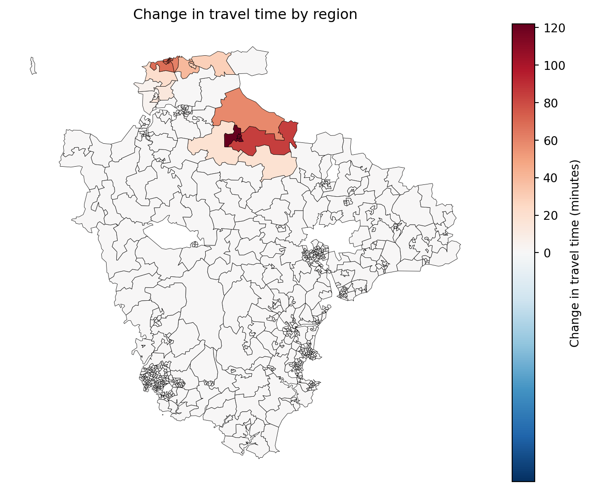
Or, to match the table above exactly, restrict the map to just the 10 worst-affected regions (direction="worsened", n=10) – everywhere else greyed out for geographic context.
comparator.plot_population_impact_map(direction="worsened", n=10);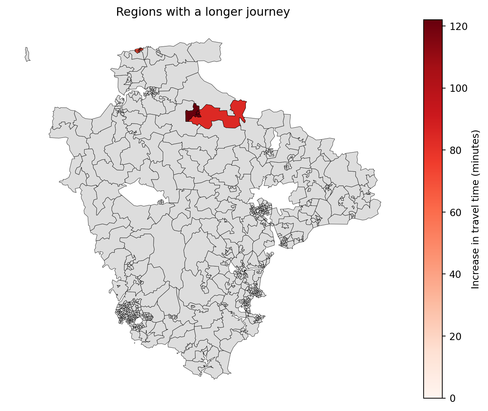
show_sites overlays the sites themselves on top of the impact map – "closed" marks just the site(s) being closed (a black X); "all" would show every candidate site, with the closed one still picked out the same way.
comparator.plot_population_impact_map(direction="worsened", show_sites="closed");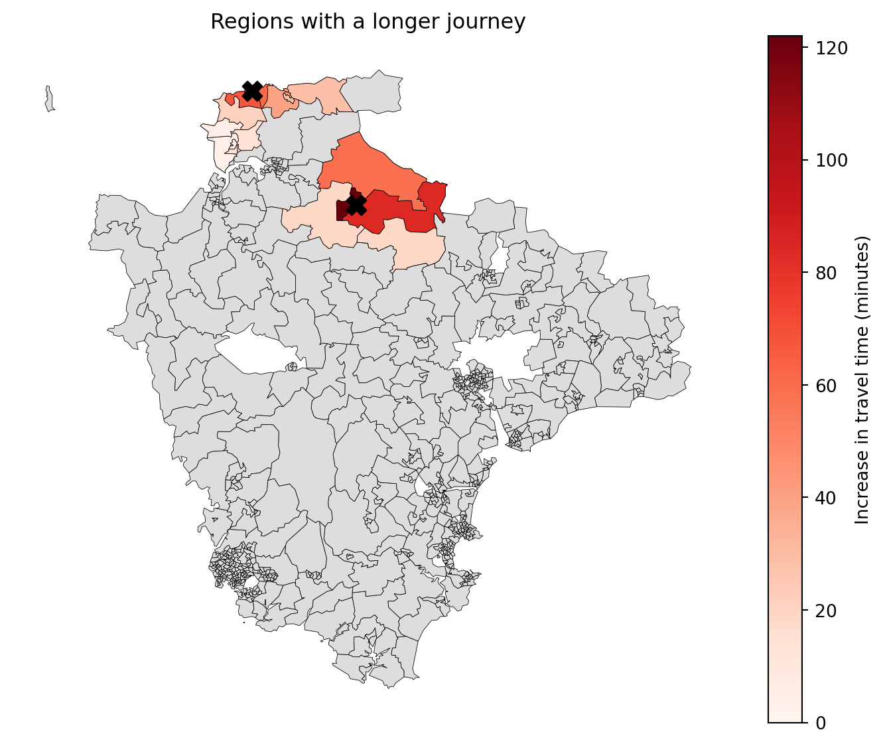
We can also show all of the sites on the map, including those remaining open.
comparator.plot_population_impact_map(show_sites="all");Who is most affected by deprivation?
The regional total hides how the closure’s impact is spread across deprivation bands. population_impact_by_equity_group() splits the same baseline-vs-candidate diff by IMD decile band, registered above via add_equity_data().
comparator.population_impact_by_equity_group()[["demand_improved", "demand_worsened", "band_total_demand", "proportion_of_band_improved", "proportion_of_band_worsened"]]| demand_improved | demand_worsened | band_total_demand | proportion_of_band_improved | proportion_of_band_worsened | |
|---|---|---|---|---|---|
| Index of Multiple Deprivation (IMD) Decile (where 1 is most deprived 10% of LSOA | |||||
| 1 | 0.0 | 326.0 | 8147.0 | 0.0 | 0.040015 |
| 2 | 0.0 | 542.0 | 15116.0 | 0.0 | 0.035856 |
| 3 | 0.0 | 235.0 | 21236.0 | 0.0 | 0.011066 |
| 4 | 0.0 | 4147.0 | 38726.0 | 0.0 | 0.107086 |
| 5 | 0.0 | 1028.0 | 37354.0 | 0.0 | 0.027520 |
| 6 | 0.0 | 1903.0 | 31770.0 | 0.0 | 0.059899 |
| 7 | 0.0 | 453.0 | 25120.0 | 0.0 | 0.018033 |
| 8 | 0.0 | 594.0 | 28605.0 | 0.0 | 0.020766 |
| 9 | 0.0 | 441.0 | 20758.0 | 0.0 | 0.021245 |
| 10 | 0.0 | 0.0 | 8936.0 | 0.0 | 0.000000 |
proportion_of_band_worsened is the rate-normalised figure that matters here: the share of that band’s own population who got a longer journey, not the share of the region-wide worsened-total that happened to live in that band – a more deprived band could look “less affected” on a raw headcount alone purely because it’s smaller. plot_population_impact_by_equity_group() shows this for every band at once, ordered most- to least-disadvantaged.
comparator.plot_population_impact_by_equity_group();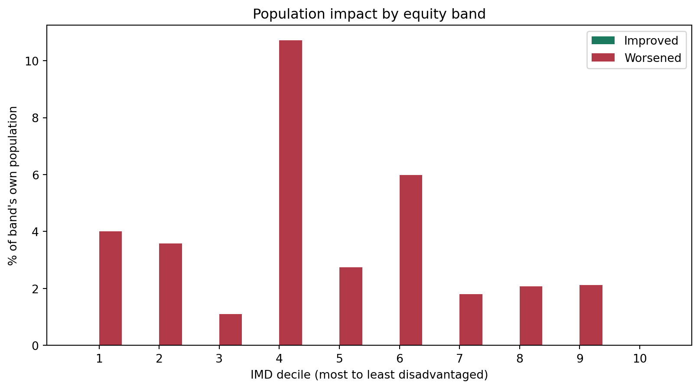
Everything above – which sites changed, how many people are affected and by how much, the worst-hit places, and the equity picture – can also be pulled together into one board-paper-style paragraph via decision_summary(), rather than assembling the pieces by hand.
print(comparator.decision_summary())2 sites would close: Ilfracombe & District Tyrrell Hospital, South Molton Hospital.
9,669 people (4.1% of the cohort) get a longer journey, averaging 51.2 minutes more. 0 of 683 regions improved; 25 worsened; 658 unchanged. In the most disadvantaged third of areas, 0.0% of people see a shorter journey, compared to 0.0% in the least disadvantaged third. 5,250 people (6.3%) in the most disadvantaged third get a longer journey.
Hit hardest: North Devon 013D (7.0 -> 129.0); North Devon 013C (10.0 -> 127.0); North Devon 013E (10.0 -> 126.0).
Equity in the proposed network: Significant Disparity (Worst group travels 131% longer) Highly Inequitable (Most deprived travel 29% longer)Which sites pick up the extra patients?
Closing two sites means their nearby patients now have to travel to one of the remaining 13. site_allocation_summary() shows how much of the total demand each surviving site now serves, and the average travel time for the patients allocated to it – the capacity question that naturally follows a closure decision.
solution_greedy_public_transport_extended.site_allocation_summary()| n_regions | allocated_demand | proportion | average_travel_cost | |
|---|---|---|---|---|
| site | ||||
| North Devon District Hospital | 86 | 32895 | 0.139523 | 97.302022 |
| Honiton Hospital | 26 | 10119 | 0.042919 | 77.022433 |
| Tiverton & District Hospital | 20 | 7841 | 0.033257 | 65.419844 |
| Exmouth Minor Injury Unit | 28 | 10601 | 0.044964 | 32.788322 |
| Victoria Hospital (Sidmouth) | 21 | 9476 | 0.040192 | 50.559202 |
| Newton Abbot Community Hospital | 80 | 26031 | 0.110409 | 62.077485 |
| Totnes Community Hospital | 82 | 30002 | 0.127252 | 66.614559 |
| NHS Walk in Centre (Exeter) | 117 | 37891 | 0.160713 | 65.334037 |
| Tavistock Hospital | 22 | 9369 | 0.039738 | 64.719607 |
| South Hams Hospital (Kingsbridge) | 15 | 7276 | 0.030861 | 73.377130 |
| Cumberland Centre (Plymouth) | 96 | 27312 | 0.115843 | 50.082088 |
| Derriford Hospital (UTC) | 71 | 19771 | 0.083858 | 35.779981 |
| Dawlish Community Hospital | 19 | 7184 | 0.030471 | 40.411331 |
site_allocation_summary() shows the aggregate picture after the closures, but not specifically where the two closed sites’ own patients ended up. site_reallocation_matrix() answers that directly: rows are the previous network’s sites, columns are the new network’s sites, and each cell is how much demand moved from one to the other. Reading a closed site’s row across shows exactly which surviving sites picked up its patients.
comparator.site_reallocation_matrix()| Proposed (13 sites) | North Devon District Hospital | Honiton Hospital | Tiverton & District Hospital | Exmouth Minor Injury Unit | Victoria Hospital (Sidmouth) | Newton Abbot Community Hospital | Totnes Community Hospital | NHS Walk in Centre (Exeter) | Tavistock Hospital | South Hams Hospital (Kingsbridge) | Cumberland Centre (Plymouth) | Derriford Hospital (UTC) | Dawlish Community Hospital |
|---|---|---|---|---|---|---|---|---|---|---|---|---|---|
| Current (15 sites) | |||||||||||||
| North Devon District Hospital | 23868.0 | 0.0 | 0.0 | 0.0 | 0.0 | 0.0 | 0.0 | 0.0 | 0.0 | 0.0 | 0.0 | 0.0 | 0.0 |
| Honiton Hospital | 0.0 | 10119.0 | 0.0 | 0.0 | 0.0 | 0.0 | 0.0 | 0.0 | 0.0 | 0.0 | 0.0 | 0.0 | 0.0 |
| Tiverton & District Hospital | 0.0 | 0.0 | 7199.0 | 0.0 | 0.0 | 0.0 | 0.0 | 0.0 | 0.0 | 0.0 | 0.0 | 0.0 | 0.0 |
| Exmouth Minor Injury Unit | 0.0 | 0.0 | 0.0 | 10601.0 | 0.0 | 0.0 | 0.0 | 0.0 | 0.0 | 0.0 | 0.0 | 0.0 | 0.0 |
| Victoria Hospital (Sidmouth) | 0.0 | 0.0 | 0.0 | 0.0 | 9476.0 | 0.0 | 0.0 | 0.0 | 0.0 | 0.0 | 0.0 | 0.0 | 0.0 |
| Newton Abbot Community Hospital | 0.0 | 0.0 | 0.0 | 0.0 | 0.0 | 26031.0 | 0.0 | 0.0 | 0.0 | 0.0 | 0.0 | 0.0 | 0.0 |
| Totnes Community Hospital | 0.0 | 0.0 | 0.0 | 0.0 | 0.0 | 0.0 | 30002.0 | 0.0 | 0.0 | 0.0 | 0.0 | 0.0 | 0.0 |
| NHS Walk in Centre (Exeter) | 0.0 | 0.0 | 0.0 | 0.0 | 0.0 | 0.0 | 0.0 | 37891.0 | 0.0 | 0.0 | 0.0 | 0.0 | 0.0 |
| Tavistock Hospital | 0.0 | 0.0 | 0.0 | 0.0 | 0.0 | 0.0 | 0.0 | 0.0 | 9369.0 | 0.0 | 0.0 | 0.0 | 0.0 |
| South Hams Hospital (Kingsbridge) | 0.0 | 0.0 | 0.0 | 0.0 | 0.0 | 0.0 | 0.0 | 0.0 | 0.0 | 7276.0 | 0.0 | 0.0 | 0.0 |
| Cumberland Centre (Plymouth) | 0.0 | 0.0 | 0.0 | 0.0 | 0.0 | 0.0 | 0.0 | 0.0 | 0.0 | 0.0 | 27312.0 | 0.0 | 0.0 |
| Derriford Hospital (UTC) | 0.0 | 0.0 | 0.0 | 0.0 | 0.0 | 0.0 | 0.0 | 0.0 | 0.0 | 0.0 | 0.0 | 19771.0 | 0.0 |
| Dawlish Community Hospital | 0.0 | 0.0 | 0.0 | 0.0 | 0.0 | 0.0 | 0.0 | 0.0 | 0.0 | 0.0 | 0.0 | 0.0 | 7184.0 |
| Ilfracombe & District Tyrrell Hospital | 6016.0 | 0.0 | 0.0 | 0.0 | 0.0 | 0.0 | 0.0 | 0.0 | 0.0 | 0.0 | 0.0 | 0.0 | 0.0 |
| South Molton Hospital | 3011.0 | 0.0 | 642.0 | 0.0 | 0.0 | 0.0 | 0.0 | 0.0 | 0.0 | 0.0 | 0.0 | 0.0 | 0.0 |
The same table as a heatmap, so it’s easier to scan at a glance – the diagonal is demand that stayed with the same site, and the two closed sites’ rows show where their patients were redistributed.
comparator.plot_site_reallocation_matrix();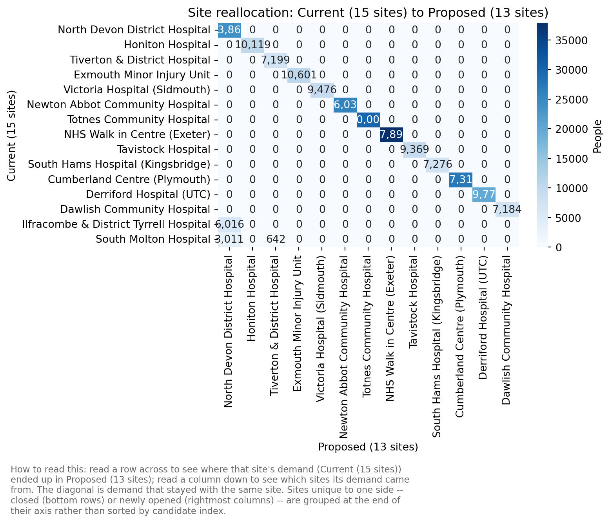
With 15 sites, most of that heatmap is an uninteresting 100%-diagonal – a site that isn’t affected by the closures shows up as a single cell equal to its own total demand and nothing else. changed_only=True drops every row/column that saw no reallocation at all, leaving just the two closed sites and whichever surviving sites actually picked up their patients.
comparator.plot_site_reallocation_matrix(changed_only=True);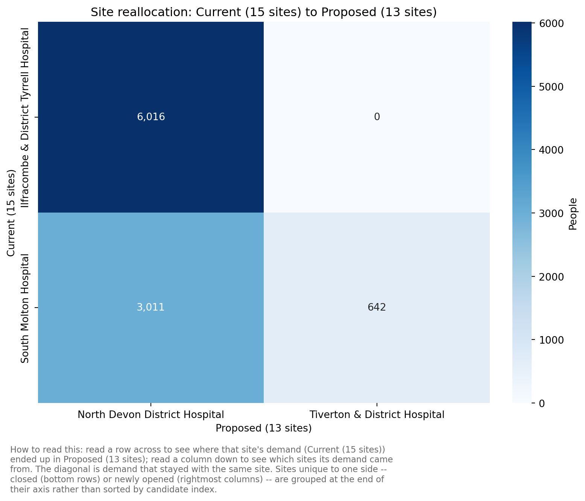
Brute force
In fact, when you only want to close one or two sites, brute force (evaluating every possible combination) is often quite doable.
solution_bf_public_transport_extended = problem_public_transport_extended.solve(
p=len(problem_public_transport_extended.show_sites())-2,
search_strategy="brute-force",
threshold_for_coverage=60,
baseline=baseline # Again, still optional, but opens up lots of useful additional metrics
)We can see that in this case it’s found the same solution as our greedy option.
list(
set(solution_bf_public_transport_extended .show_solutions(n_best=1).site_names.iloc[0]) -
set(solution_greedy_public_transport_extended.show_solutions(n_best=1).site_names.iloc[0])
)[]solution_bf_public_transport_extended.show_solutions(n_best=5)[["solution_rank", "unselected_site_names", "weighted_average", "90th_percentile", "max", "proportion_demand_worsened", "mean_increase_among_worsened"]]| solution_rank | unselected_site_names | weighted_average | 90th_percentile | max | proportion_demand_worsened | mean_increase_among_worsened | |
|---|---|---|---|---|---|---|---|
| 0 | 1 | [Ilfracombe & District Tyrrell Hospital, South Molton Hospital] | 63.26 | 99.0 | 262.0 | 0.04 | 51.17 |
| 1 | 2 | [Tiverton & District Hospital, Ilfracombe & District Tyrrell Hospital] | 63.33 | 98.8 | 262.0 | 0.05 | 39.75 |
| 2 | 3 | [Ilfracombe & District Tyrrell Hospital, Dawlish Community Hospital] | 63.36 | 98.0 | 262.0 | 0.06 | 39.26 |
| 3 | 4 | [South Molton Hospital, Dawlish Community Hospital] | 63.42 | 98.0 | 262.0 | 0.05 | 49.01 |
| 4 | 5 | [South Hams Hospital (Kingsbridge), Ilfracombe & District Tyrrell Hospital] | 63.42 | 99.0 | 262.0 | 0.06 | 40.03 |
The table above shows unselected_site_names, but with 13 sites it’s still hard to tell at a glance which specific one or two sites actually differ between these near-identical top-5 options – there’s no baseline here, so sites_closed_vs_baseline/sites_added_vs_baseline don’t apply. show_solutions_summary()’s Sites added/Sites removed/Sites changed columns answer that directly, diffing each row against a chosen reference – by default the top-ranked solution, since no required sites are configured here.
solution_bf_public_transport_extended.show_solutions_summary(n_best=5)[["Rank", "Sites added (vs rank 1)", "Sites removed (vs rank 1)", "Sites changed (vs rank 1)"]]| Rank | Sites added (vs rank 1) | Sites removed (vs rank 1) | Sites changed (vs rank 1) | |
|---|---|---|---|---|
| 0 | 1 | 0 | ||
| 1 | 2 | South Molton Hospital | Tiverton & District Hospital | 2 |
| 2 | 3 | South Molton Hospital | Dawlish Community Hospital | 2 |
| 3 | 4 | Ilfracombe & District Tyrrell Hospital | Dawlish Community Hospital | 2 |
| 4 | 5 | South Molton Hospital | South Hams Hospital (Kingsbridge) | 2 |
However, what if we scored it on one of our new metrics - “mean_increase_among_worsened”?
solution_reranked = (
solution_bf_public_transport_extended.show_solutions().sort_values("mean_increase_among_worsened")
[["solution_rank", "unselected_site_names", "weighted_average", "90th_percentile", "max", "proportion_demand_worsened", "mean_increase_among_worsened"]]
.reset_index(drop=True)
.reset_index(drop=False, names="rank_proportion_demand_worsened")
.rename(columns={"solution_rank":"rank_weighted_average"})
)
solution_reranked["rank_proportion_demand_worsened"] = solution_reranked["rank_proportion_demand_worsened"] + 1
solution_reranked| rank_proportion_demand_worsened | rank_weighted_average | unselected_site_names | weighted_average | 90th_percentile | max | proportion_demand_worsened | mean_increase_among_worsened | |
|---|---|---|---|---|---|---|---|---|
| 0 | 1 | 54 | [Newton Abbot Community Hospital, Cumberland Centre (Plymouth)] | 64.65 | 97.8 | 262.0 | 0.22 | 15.61 |
| 1 | 2 | 11 | [Cumberland Centre (Plymouth), Ilfracombe & District Tyrrell Hospital] | 63.57 | 98.0 | 262.0 | 0.14 | 17.35 |
| 2 | 3 | 16 | [Tiverton & District Hospital, Cumberland Centre (Plymouth)] | 63.69 | 98.0 | 262.0 | 0.14 | 17.79 |
| 3 | 4 | 19 | [Cumberland Centre (Plymouth), Dawlish Community Hospital] | 63.72 | 97.0 | 262.0 | 0.14 | 17.82 |
| 4 | 5 | 27 | [Victoria Hospital (Sidmouth), Cumberland Centre (Plymouth)] | 63.92 | 98.0 | 262.0 | 0.15 | 18.00 |
| ... | ... | ... | ... | ... | ... | ... | ... | ... |
| 100 | 101 | 100 | [Cumberland Centre (Plymouth), Derriford Hospital (UTC)] | 71.54 | 107.8 | 262.0 | 0.20 | 51.94 |
| 101 | 102 | 87 | [North Devon District Hospital, Ilfracombe & District Tyrrell Hospital] | 68.07 | 128.0 | 314.0 | 0.13 | 54.45 |
| 102 | 103 | 103 | [Exmouth Minor Injury Unit, NHS Walk in Centre (Exeter)] | 72.65 | 110.0 | 262.0 | 0.21 | 55.82 |
| 103 | 104 | 65 | [Honiton Hospital, Victoria Hospital (Sidmouth)] | 65.99 | 116.0 | 294.0 | 0.08 | 58.03 |
| 104 | 105 | 101 | [Tiverton & District Hospital, NHS Walk in Centre (Exeter)] | 72.52 | 120.8 | 262.0 | 0.19 | 59.34 |
105 rows × 8 columns
Suddenly we are seeing a very different picture!
solution_reranked[solution_reranked["rank_weighted_average"]==1]| rank_proportion_demand_worsened | rank_weighted_average | unselected_site_names | weighted_average | 90th_percentile | max | proportion_demand_worsened | mean_increase_among_worsened | |
|---|---|---|---|---|---|---|---|---|
| 97 | 98 | 1 | [Ilfracombe & District Tyrrell Hospital, South Molton Hospital] | 63.26 | 99.0 | 262.0 | 0.04 | 51.17 |
Going on just weighted average, we’d choose a very unfavourable solution!
Let’s do some comparison plots.
solution_bf_public_transport_extended.plot_best_combination(
unchosen_site_colour="magenta",
unchosen_site_opacity=1,
plot_site_allocation=True,
legend_loc="lower right",
show_all_locations=True,
label_all_locations=True,
cmap="Set3",
title_fontsize=12
);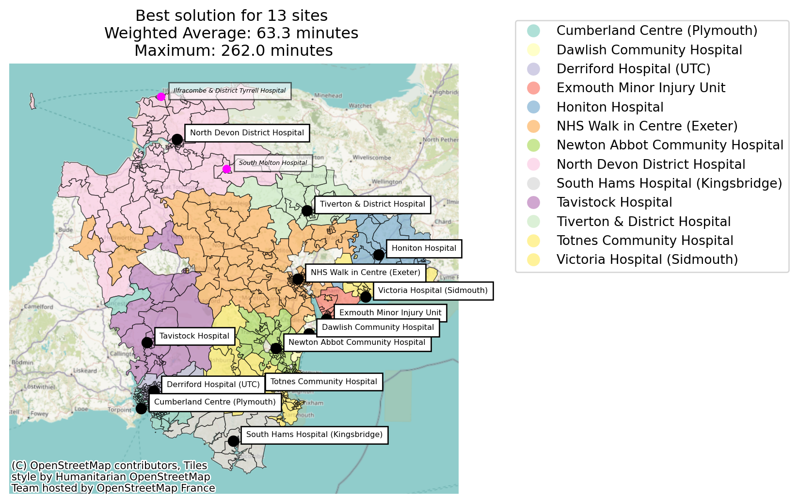
solution_bf_public_transport_extended.plot_best_combination(
unchosen_site_colour="magenta",
unchosen_site_opacity=1,
plot_site_allocation=True,
legend_loc="lower right",
show_all_locations=True,
label_all_locations=True,
cmap="Set3",
title_fontsize=12,
sort_by="mean_increase_among_worsened"
);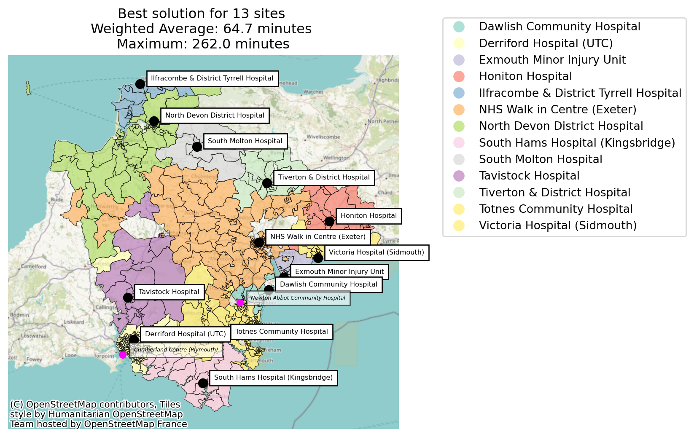
solution_bf_public_transport_extended.plot_best_combination(
unchosen_site_colour="yellow",
unchosen_site_opacity=0.8,
label_all_locations=True,
sort_by="mean_increase_among_worsened"
);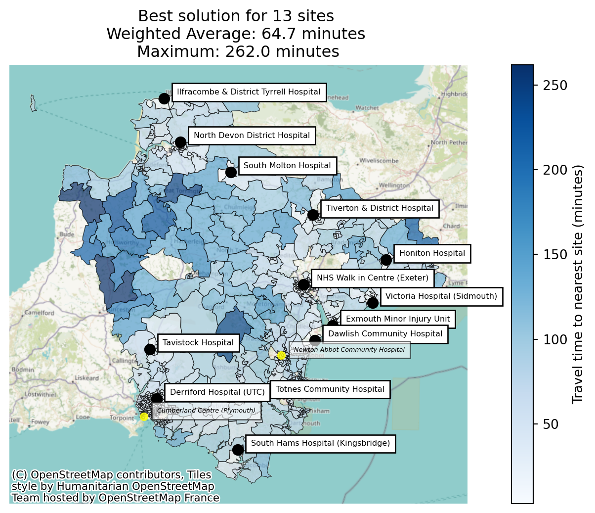
solution_bf_public_transport_extended.plot_best_combination(
plot_regions_not_meeting_threshold=True, chosen_site_colour="white",
unchosen_site_colour="yellow", unchosen_site_opacity=0.8,
label_all_locations=True,
sort_by="mean_increase_among_worsened"
);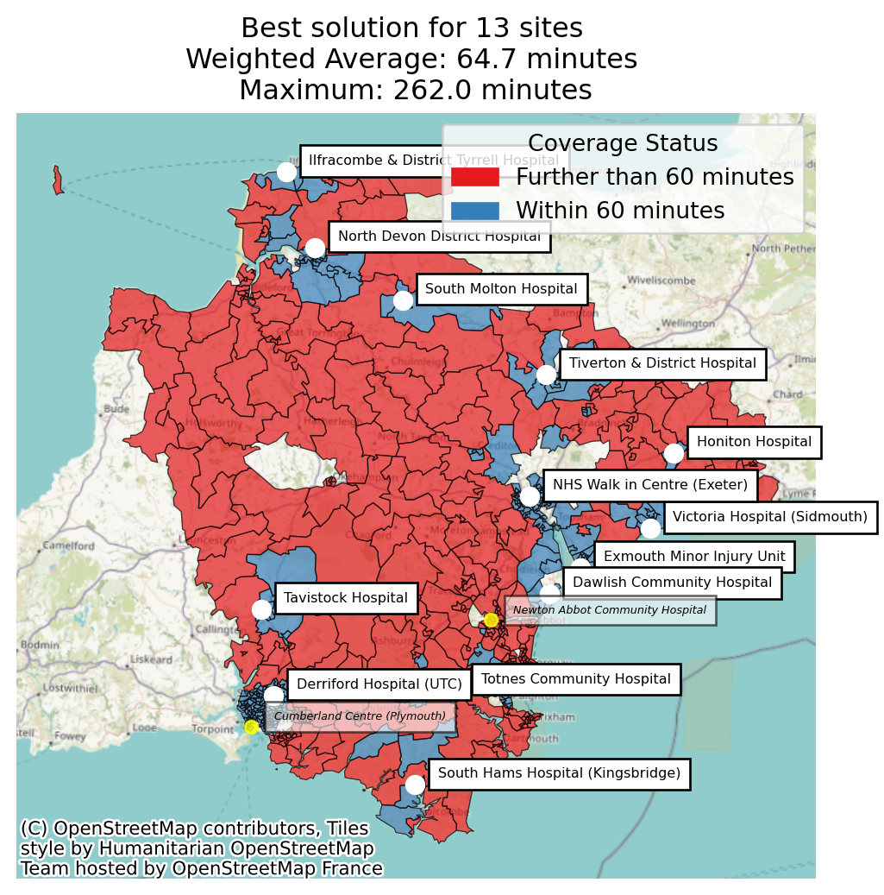
Let’s have a look at the demand improvement columns.
Tip
Don’t forget to consider boundary effects! In our example, there’s a hospital just over the border in North Cornwall, but our travel matrix only considers MIUs situated within Devon.